Випробування, імовірнісний простір, події
Випробування (експеримент) - це
діяльність, яку можна спостерігати при реалізації певних умов. Результатом
випробування можуть бути різні наслідки.
Розглянемо
приклади випробувань:
1)
При киданні монети можуть бути два
можливих наслідки: герб або напис;
2)
При киданні грального кубика можуть бути
шість можливих наслідків: 1, 2, 3, 4, 5 або 6 на верхній грані.
Розглядаючи поняття випробування,
скористаємося наступними термінами: елементарний наслідок, простір елементарних
наслідків та подія.
Елементарними наслідками називають
такі події, які неможливо розділити на більш прості.
Множину усіх можливих елементарних
наслідків називають простором елементарних наслідків.
Подія - це підмножина
усіх можливих елементарних наслідків випробування.
Випадкові події позначають великими
літерами А, В, С... Кожна випадкова подія є наслідком багатьох
випадкових або невідомих нам причин, які впливають на подію. Використовуючи
простір елементарних наслідків можна оцінювати ймовірність того, що деякі події
здійсняться.
Імовірність події є численна міра
степеня об'єктивної можливості цієї події.
Порожня множина
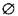
називається
неможливою подією, тому що в розглянутих умовах не може трапитись, тобто не
містить жодного наслідку і тому ймовірність неможливої події дорівнює 0.
Універсальна множина
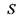
представляє деяку достовірну
подію, тому що ця множина містить всі можливі
наслідки випробування і тому ймовірність достовірної події дорівнює 1.
Це можна записати як
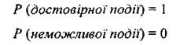
Ймовірність того, що
сонце підійметься завтра на небосхилі досить високо, дуже близька до 1.
Ймовірність скласти
екзамен з курсу теорії ймовірностей без його вивчення дуже близька до 0.
В зв'язку з цим, перша
властивість ймовірності стверджує: ймовірність здійснення деякої випадкової
події лежить між 0 та 1.
Якщо А - деяка випадкова подія, то
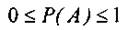
(1)
Так як події є результатом
випробувань, тобто підмножиною просторів елементарних наслідків експерименту,
то можна говорити про об'єднання та перетин двох подій.
Об'єднанням (сумою) двох випадкових подій
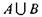
(або
А+В) називають таку випадкову подію,
яка полягає у появі А або В або А та В.
Перетином (добутком) двох
випадкових подій
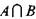
(або А - В) називають таку випадкову подію, яка
полягає у появі подій А та В одночасно.
Діаграма Венна зображує
об'єднання та перетин двох випадкових подій А та В на рис. 1.
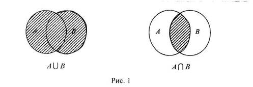
|
Приклад 1. Кидають шестигранний кубик. Нехай
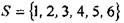
позначає простір елементарних наслідків даного випробування. Нехай результатом
випробування є події
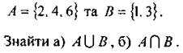
Розв'язання, а)
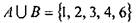
є випадковою подією, яка
полягає
в появі хоча б однієї із цих подій. б)
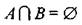
- неможлива подія. Це очевидно, тому що при
киданні кубика на верхній грані не може з'явитись парне і непарне число одночасно. Ознайомимося
із різновидами випадкових подій.
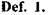
Події називають несумісними, якщо
поява однієї з них виключає появу інших
подій в одному і тому ж випробуванні. Класичним
прикладом несумісних подій є поява герба або напису при одноразовому киданні монети. Якщо випав герб, то уже не
з'явиться напис.
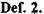
Дві події
називають незалежними, якщо поява однієї події не
впливає на ймовірність того, що з'явиться друга.
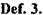
Повна група
випадкових подій - це такі події, які містять всі
можливі наслідки випробування.
Сумісна ймовірність
повної групи подій дорівнює 1, тому що внаслідок
випробування хоча б одна з них з'явиться обов'язково. Наприклад, якщо кидають гральний кубик, то достовірним є те, що випаде
грань 1 або 2 або 3 або 4 або 5 або 6. Тобто
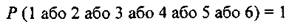
Таким чином, друга
властивість ймовірності стверджує, що якщо
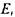
- і-та подія повної групи
подій деякого імовірнісного
простору, тоді
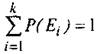
(2)
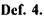
Дві події називають протилежними, якщо поява однієї з них означає провал (непояву) іншої.
Подія протилежна події А позначається
 .
Зрозуміло, що протилежні події також утворюють повну групу подій, тобто
.
Зрозуміло, що протилежні події також утворюють повну групу подій, тобто
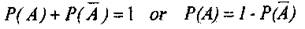
(3)